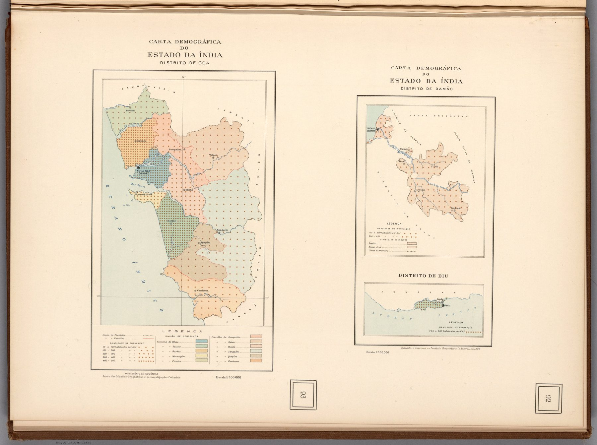

Three demographic maps of Goa, Daman and Diu – the remaining Portuguese enclaves in India – engraved in 1946 and published in the 1948 Atlas de Portugal Ultramarino. The four-century European sequence closes where it began, with Portugal, its once-vast claim reduced to a few administered coastal territories.
The object
The sheet was produced for Portugal’s Ministério das Colónias and Junta de Investigações Coloniais and engraved and printed at the Instituto Geográfico e Cadastral in Lisbon in 1946. It was published in 1948 in the Atlas de Portugal Ultramarino e das Grandes Viagens Portuguesas de Descobrimento e Expansão. The three maps show Goa, Damão and Diu through population, boundaries, settlements, water and physical features; the Rumsey record notes that the individual scales differ, with the principal statement approximately 1:500,000.
The colonial state’s self-portrait
The atlas was an intellectual production of the Portuguese colonial research apparatus – a systematic portrait of “overseas Portugal” that joined modern demographic and administrative mapping to a commemorative narrative of discovery and expansion. These sheets apply the census-and-boundary logic of the twentieth-century state to the surviving fragments of Portuguese India.
The gaze
Population is the subject here, and that is the change. The 1519 royal atlas that opens the collection imagined command of an ocean; the 1946 sheet counts inhabitants and fixes boundaries around three small territories, the work of a colonial research institute rather than a court cartographer. India would become independent the following year, while Portuguese rule in the enclaves continued until 1961 – long enough for this census portrait to remain current.